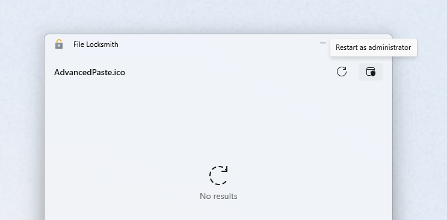

File Locksmith utility
File Locksmith is a PowerToys utility that helps you identify which processes are using specific files or directories in Windows. This shell extension allows you to easily unlock files that are being used by other processes, making file management more efficient.
How to activate and use File Locksmith
To activate File Locksmith, open PowerToys and turn on the Enable File Locksmith toggle. Select one or more files or directories in Windows File Explorer. If a directory is selected, all of its files and subdirectories will be scanned as well.
To open File Locksmith to see which processes are using one or more file(s), right-click on the selected file(s), select Show more options to expand the list of menu options, then select Unlock with File Locksmith.
When File Locksmith is opened, it will scan all of the running processes that it can access, checking which files the processes are using. Processes that are being run by a different user cannot be accessed and may be missing from the list of results. To scan all processes, select Restart as administrator.

After scanning, a list of processes will be displayed. Select End task to terminate the process, or select the expander to show more information. File Locksmith will automatically remove terminated processes from the list, whether or not this action was done via File Locksmith. To manually refresh the list of processes, select Reload.
Install PowerToys
This utility is part of the Microsoft PowerToys utilities for power users. It provides a set of useful utilities to tune and streamline your Windows experience for greater productivity. To install PowerToys, see Installing PowerToys.